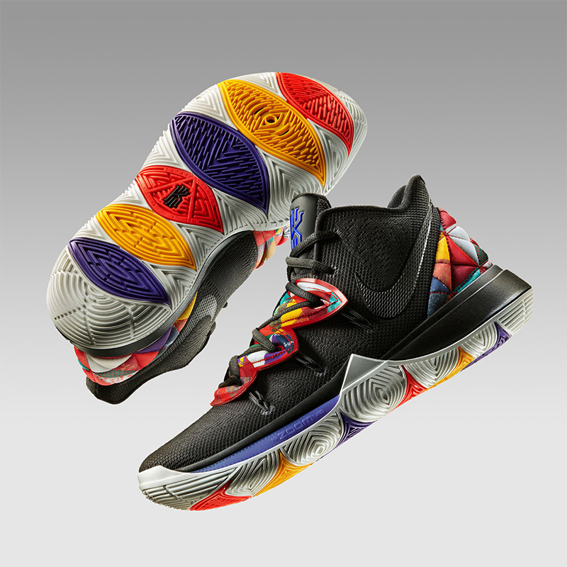

The 2019 Nike Chinese Collection
Two styles of graphics are used to represent this throughout the collection: The first is a traditional geometric quilt pattern that is influenced by all 12 Chinese Zodiac symbols; the second is a mosaic pattern of the 12 symbols.
learn more
